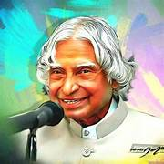

A.P.J Abdul Kalam
1931-2015
Missile man of india
Dr. APJ Abdul Kalam, the "Missile Man of India," was a visionary scientist and statesman. Born in 1931, he made significant contributions to India's missile technology and nuclear capabilities. His leadership in projects like the Agni and Prithvi missiles and the Pokhran-II nuclear tests earned him global recognition. In 2002, he became India's 11th President, focusing on youth empowerment and education. Beyond politics, Kalam was a prolific author and motivational speaker, inspiring millions with his vision for a developed and inclusive India. His humility, integrity, and dedication to public service continue to inspire people worldwide, leaving a lasting legacy of innovation and leadership.
Biographies
- Early Life: APJ Abdul Kalam was born on October 15, 1931, in Rameswaram, Tamil Nadu, India, into a humble family.
- Education: He pursued degrees in physics and aerospace engineering from St. Joseph's College and the Madras Institute of Technology, respectively.
- Contributions to Missile Technology: Kalam played a significant role in the development of India's ballistic missile programs, earning him the moniker "Missile Man of India."
- Presidency: He served as the 11th President of India from 2002 to 2007, focusing on education, scientific research, and technological innovation during his tenure
- Legacy: Kalam's life and work continue to inspire millions worldwide, embodying dedication, humility, and service to the nation.